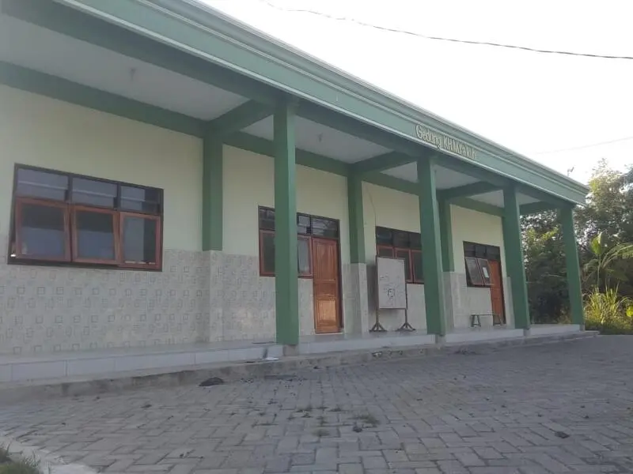

Alumni Berprestasi di Perguruan Tinggi
PP Miftahul Huda Kalanganyar terus membuktikan kualitas pendidikannya. Pada tahun 2025, beberapa alumni berhasil diterima di universitas negeri ternama di Jawa Timur melalui berbagai jalur seleksi.
Daftar Alumni yang Diterima
- M. Ridho Al-Mahbub — Universitas Brawijaya, Jurusan Peternakan
- M. Maslukh Alfanani — Universitas Negeri Malang, Pendidikan Bahasa Inggris
- Khasby Assidiq — UPN Veteran Surabaya
Bekal dari Pesantren
Para alumni menyatakan bahwa pendidikan di pesantren memberikan bekal yang sangat berharga. Selain ilmu agama, mereka juga dibekali kemampuan bahasa asing, kedisiplinan, dan kemandirian yang menjadi modal utama di perguruan tinggi.
"Apa yang saya dapatkan di pesantren sangat membantu di bangku kuliah. Disiplin waktu, kemampuan bahasa, dan mental yang kuat menjadi keunggulan saya dibanding mahasiswa lain." — M. Ridho Al-Mahbub
Prestasi alumni ini menjadi bukti bahwa mondok di pesantren tidak menghambat karir akademik. Justru sebaliknya, pesantren membentuk karakter dan kompetensi yang menjadi nilai tambah di dunia pendidikan tinggi.